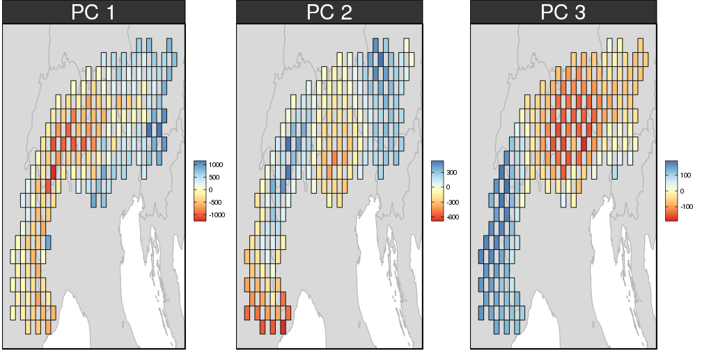
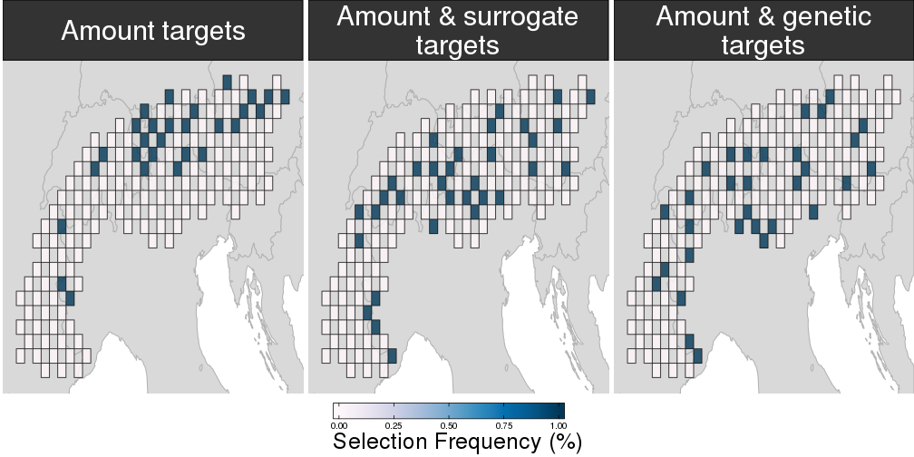
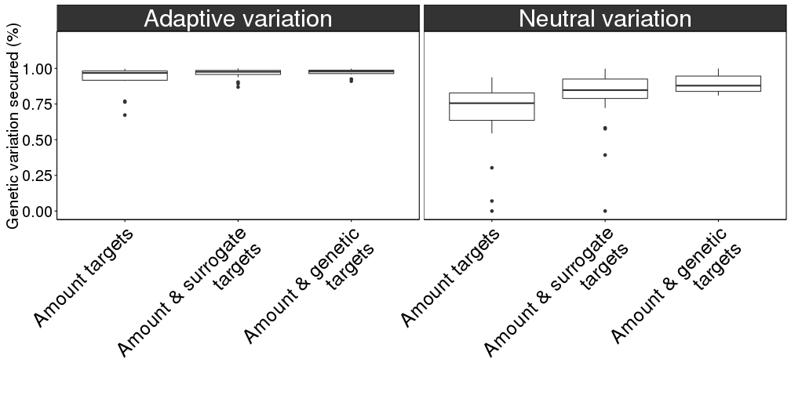

Are environmental and geographic variables effective surrogates for genetic variation in conservation planning?
Jeffrey O. Hanson
Conserving genetic variation
Adaptive variation
- genetic variation that affects fitness
- caused by abiotic and biotic factors
- helps foster resilience to short-term environmental change
Neutral variation
- genetic variation that does not affects fitness
- arises due to break-down in gene flow
- helps avoid inbreeding depression
Typically prioritizations assume zero genetic variation within species: can we use cheap variables as surrogates to make better decisions?
Study area

Climatic variation

Preliminary results: prioritisations

Preliminary results: performance
